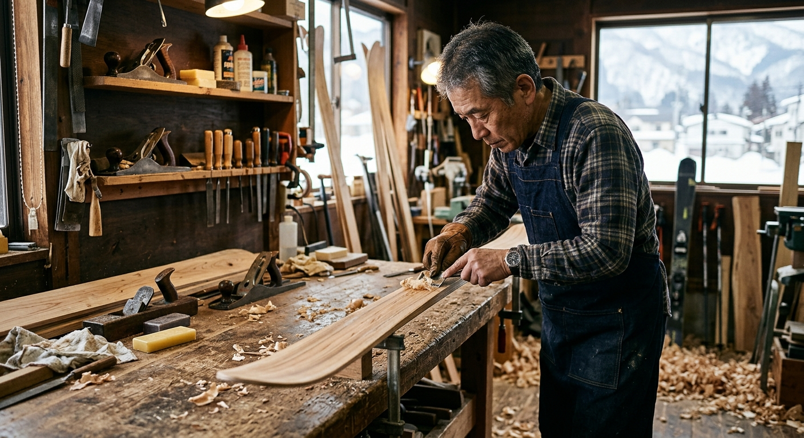
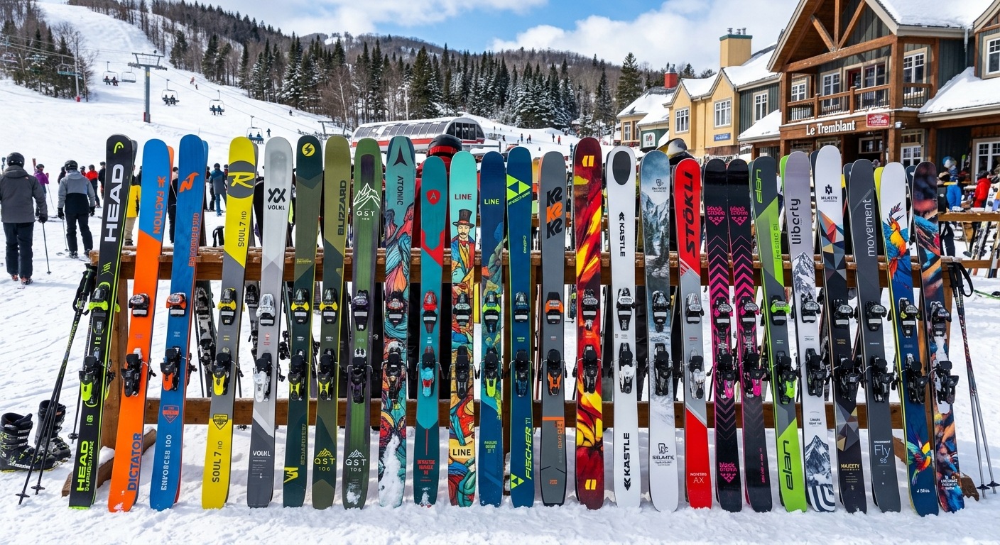
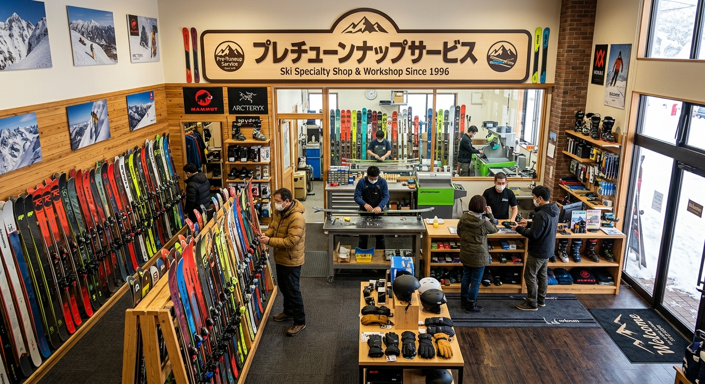

イチオシ
スキー・スノーボード
スキー・スノーボード
クリーニング
新品を買ったときも、毎年のシーズン前も。機械任せにせず、ひとつひとつ手作業で仕上げます。お客様から「スキーが変わります」と声をいただいています。

- 手作業・手仕上げだから、細かなところまで調整できる
- 量販店のスポーツショップより細やかな仕上がり
- 新品のスキー・スノーボードにもおすすめ
- スキーのこと、気軽に相談できる
プレチューンナップサービスが選ばれる理由
機械が進歩しても、最後は人の手と目
いつも手作業で対応しています。道具の状態を目で見て、手で確かめながら仕上げます。
県北で頼れる、スキーの専門店
宮城県北にあって頼もしいと、地元のスキーヤーに親しまれています。
毎年お願いしたくなる、スキー談義
仕上がりを待つあいだも、スキーの話で盛り上がれる雰囲気です。

お客様の声
★★★★★
県北に有って頼もしいです。
いつも手作業でやって頂いているし、スキー談義も楽しいです。いくら機械が進歩していても、最後は人の手と目ですよね。新品を購入した際はもちろん、毎年、頼んでいます！手仕上げなので、量販店のスポーツショップよりも細やかに調整していただけます。スキーが変わります！全スキーヤーにおすすめします！
Googleクチコミより
店舗情報
| 店名 | プレチューンナップサービス |
|---|---|
| 代表者 | 高野 正義 |
| 住所 | 宮城県登米市迫町佐沼中江５丁目１０−２ |
| 電話番号 | 0220-23-0061 |
| メール | pre@d3.dion.ne.jp |
| 公式HP | https://pre-tune.com/ |
| お問い合わせ | お問い合わせフォーム |